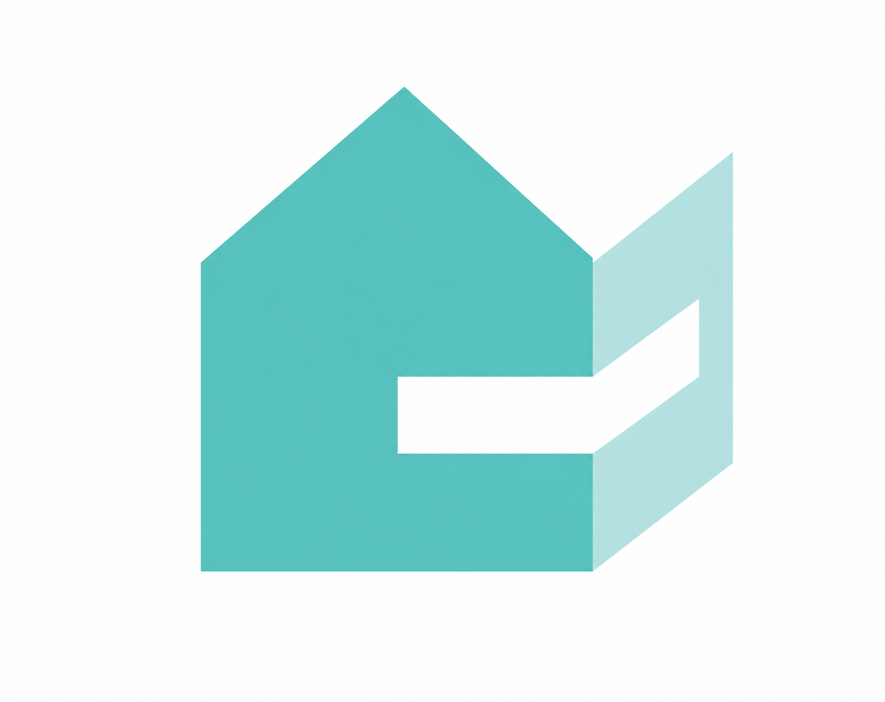
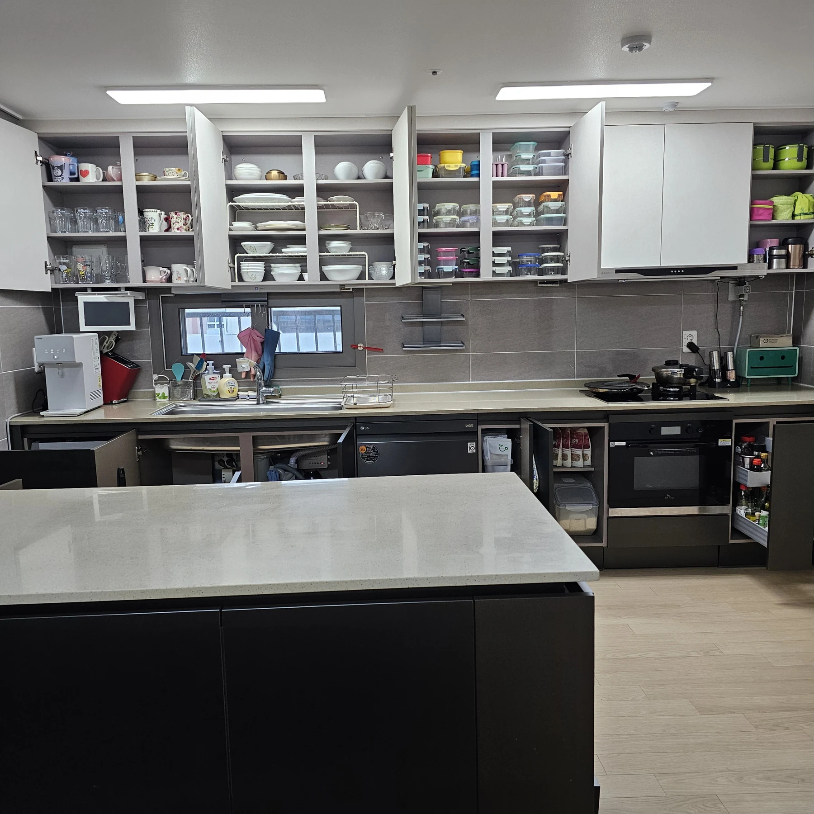
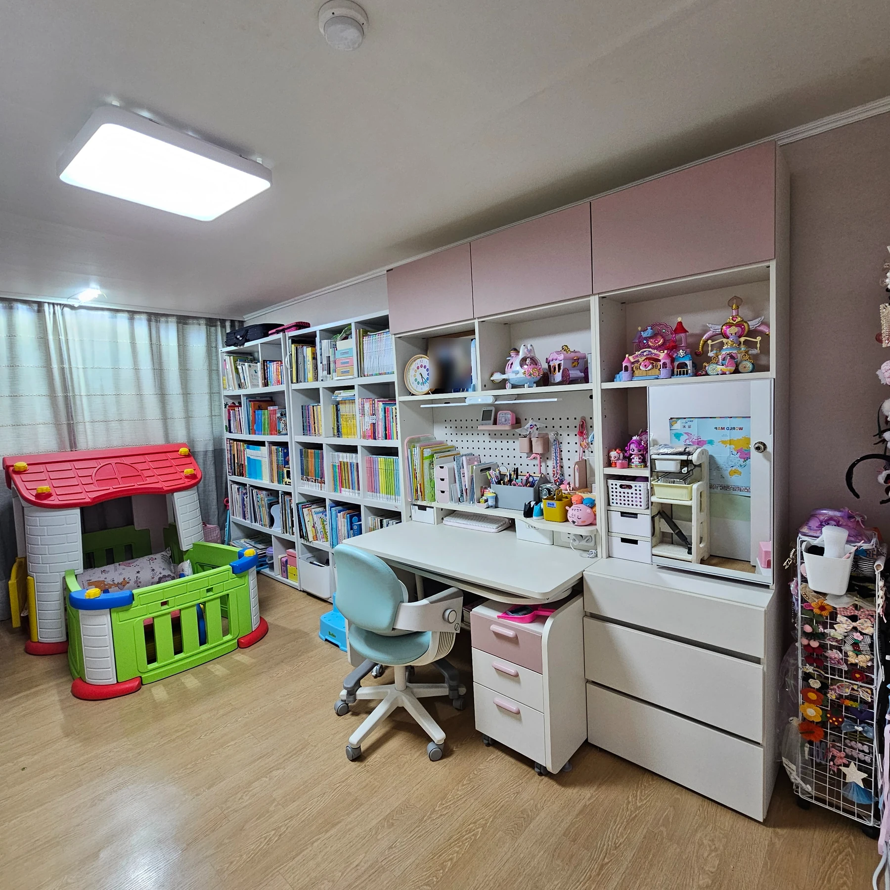
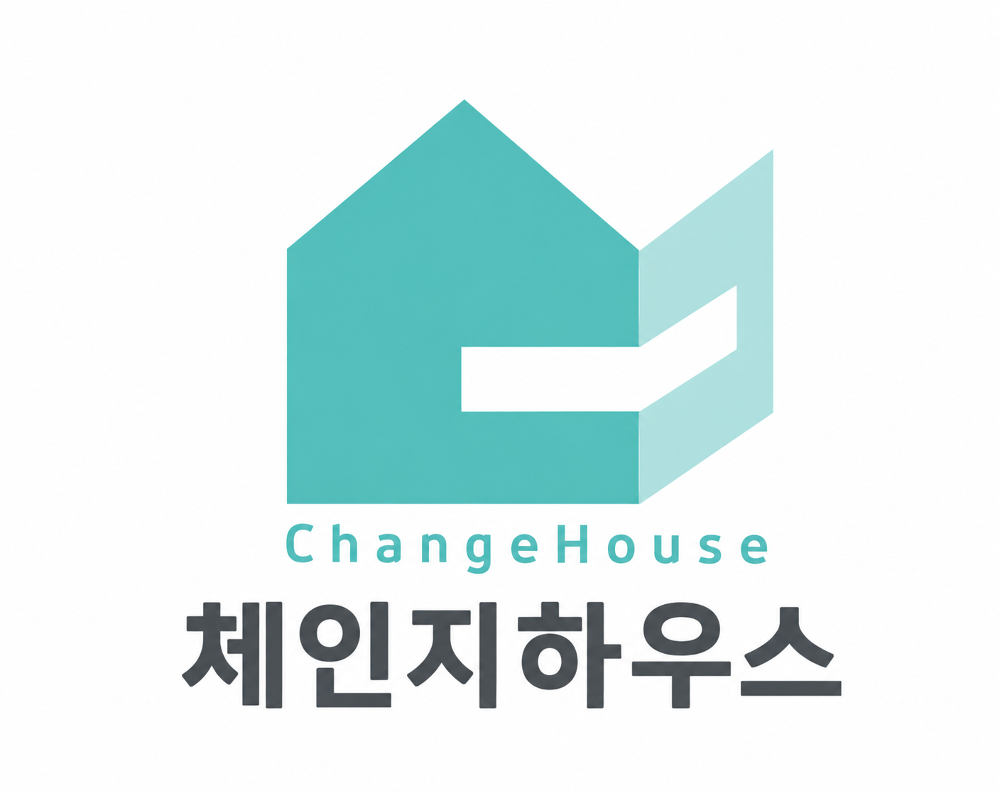

먼저, 듣습니다.
어떤 공간이 불편한지,
어떤 하루를 바라는지.

체인지하우스ChangeHouse
세종 · 실제 정리 현장익숙한 집에서 시작되는
조금 다른 일상.
무엇부터 치울지 막막했던 공간.
하나씩 분류하고, 손이 닿는 곳에 놓고,
다시 꺼내기 쉽게 정리합니다.
두 공간이 달라지는 과정을 만나보세요.
01 THE CHILDREN’S ROOM
물건으로 좁아진 아이방에서
아이의 생활을 담는 공간으로.
평택 · 실제 정리 전
책과 장난감이 뒤섞여, 공부하고 놀이할 자리가 좁아져 있었습니다.
정리 전후는 실제 현장 사진입니다. 중간 과정은 두 사람이 정리하는 모습을 AI로 재현했습니다. 평택 현장 원글
02 THE KITCHEN
물건으로 채워진 조리대에서
맛있는 일상이 시작되는 주방으로.
세종 · 이사 후 실제 정리 전
함께 쓰는 것과 자주 쓰는 것을 먼저 살펴봅니다.
정리 전후는 실제 현장 사진입니다. 중간 과정은 두 사람이 정리하는 모습을 AI로 재현했습니다. 세종 현장 원글


집을 바꾸는 건,
당신의 생활을 이해하는 일부터.
예쁘게 보이는 수납을 넘어, 매일 꺼내고 다시 놓기 편한 공간을 생각합니다. 집마다 다른 물건과 생활 방식에 맞춰 오래 유지할 수 있는 정리를 함께 찾습니다.
어떤 공간이 불편한지,
어떤 하루를 바라는지.
남길 물건과 쓰임을 살펴
생활에 맞는 자리를 만듭니다.
다시 놓기 쉬운 정리로
편안한 일상이 계속되도록.
정리가 필요한 공간부터 편하게 이야기해 주세요.
어떤 일상이 되었으면 하는지, 함께 듣겠습니다.
방 한 칸부터, 집 전체의 변화까지.
우리 집에 맞는 시작을 찾아보세요.